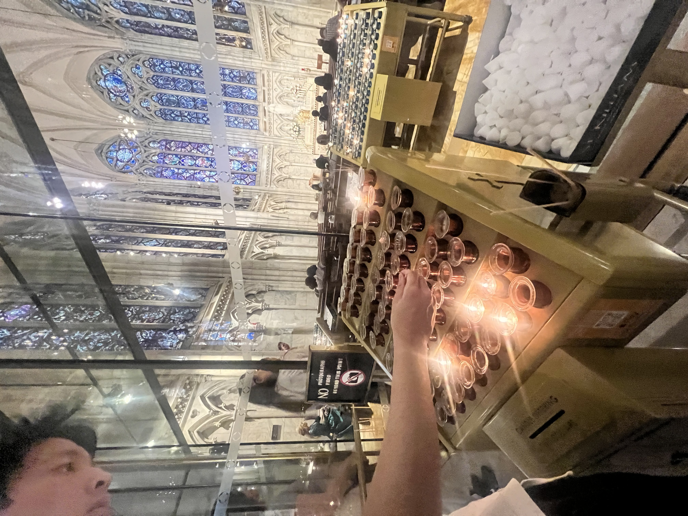
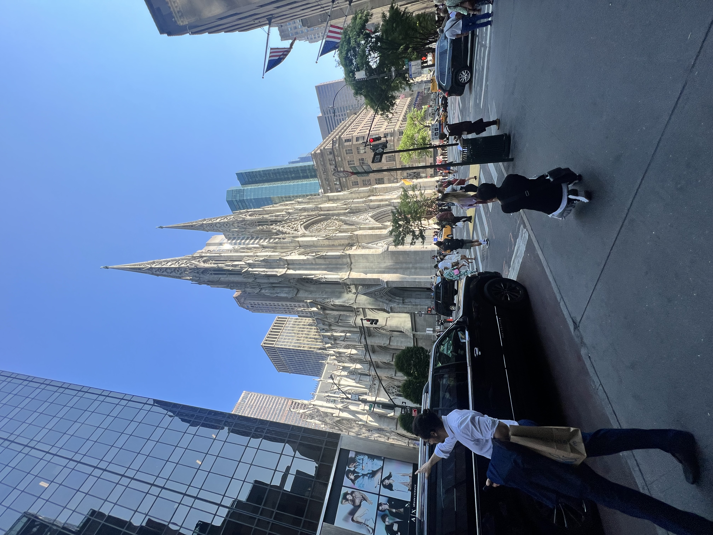
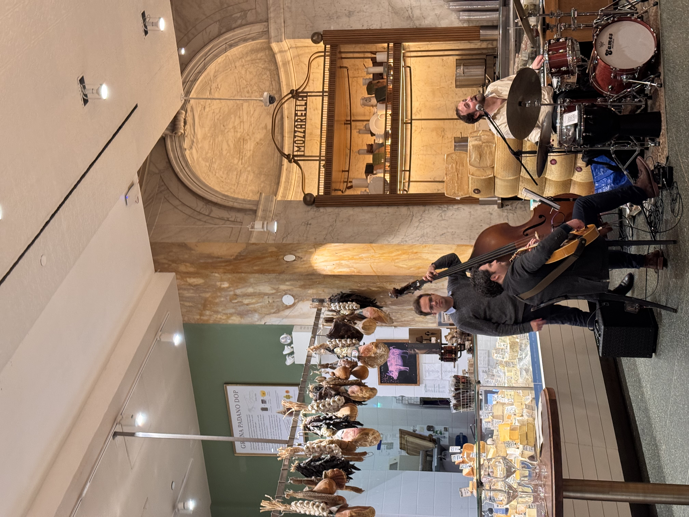
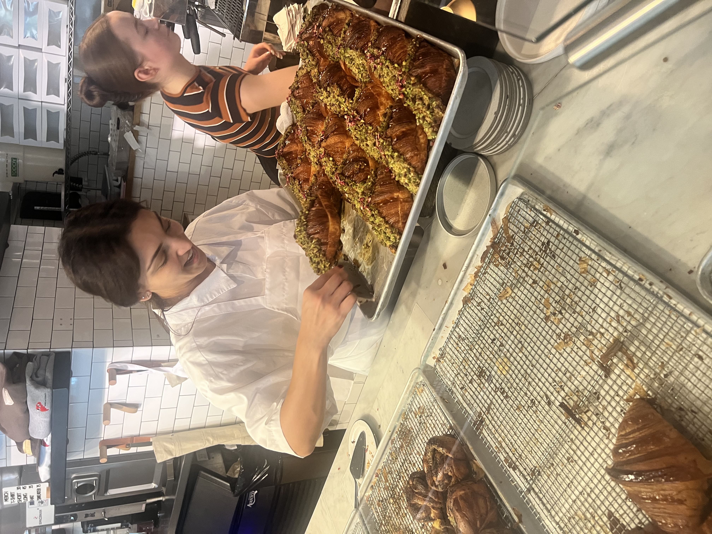
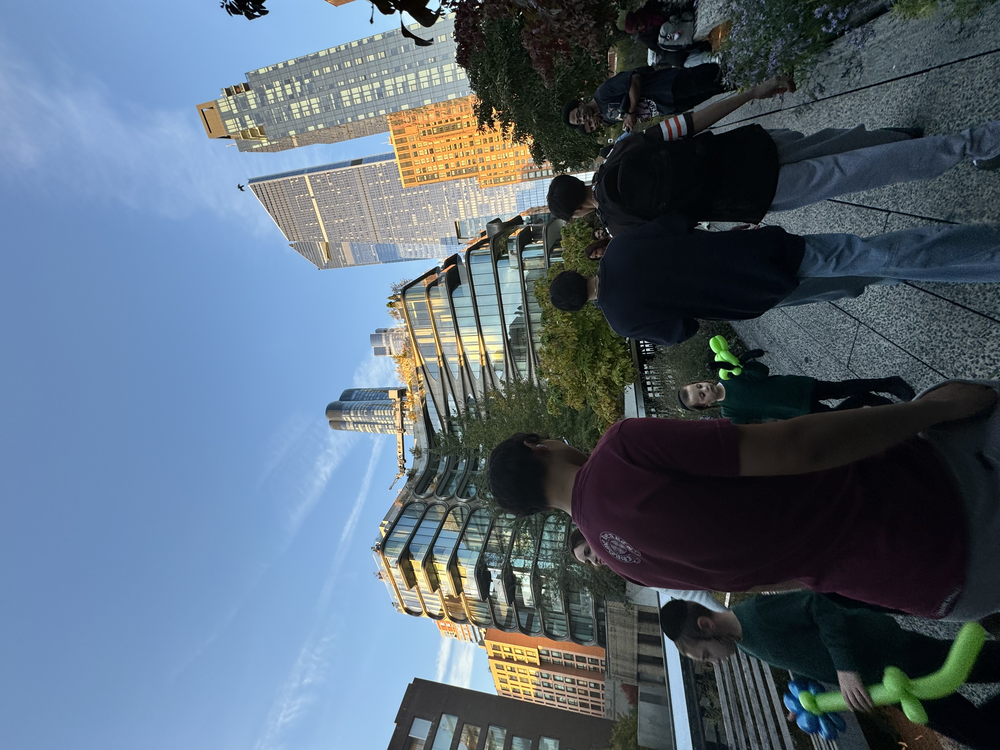
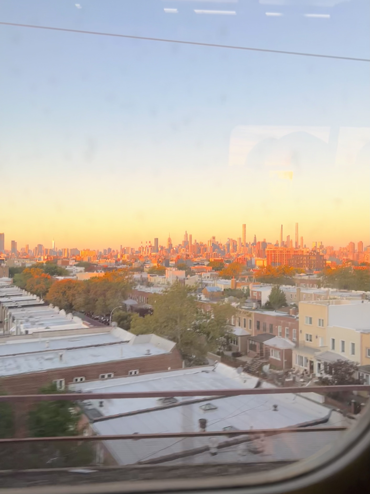
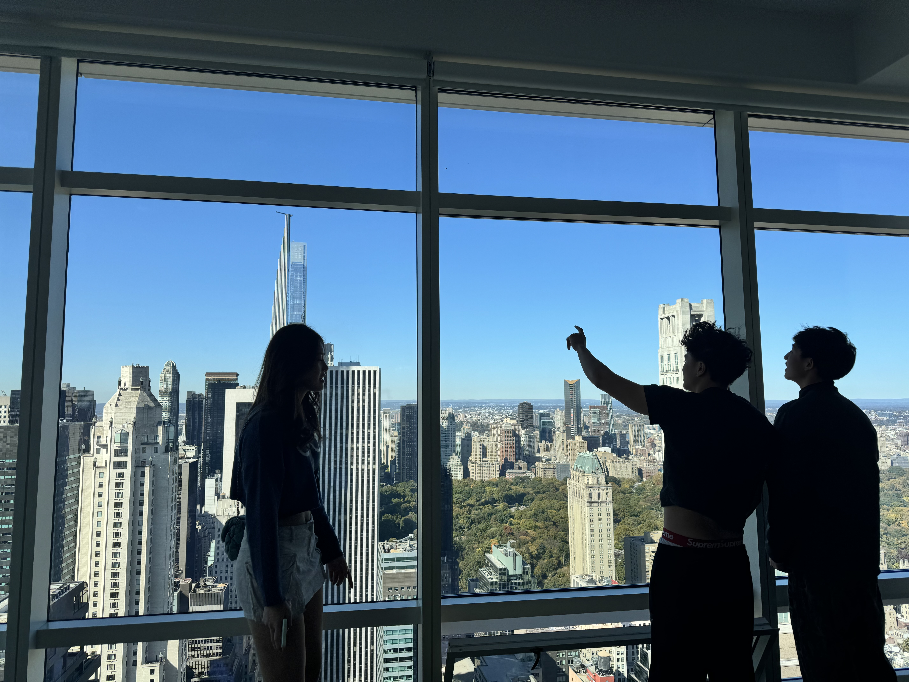
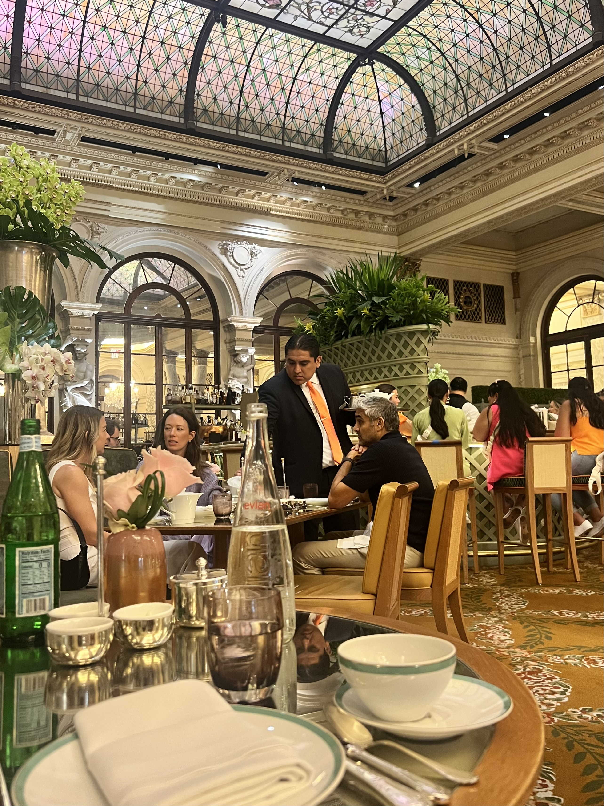

New York City Travel Guide
New York is overwhelming in the best way. The energy, the density, the constant movement—nowhere else feels quite like this. Every time I visit, I'm reminded why this city holds such mythology. It lives up to the hype if you let it.
The classics are worth seeing once—Times Square, Statue of Liberty, Central Park—but the real city reveals itself in neighborhoods. Walk everywhere. Eat everything. Take the subway. New York rewards curiosity and punishes rigid itineraries. Give yourself at least 4-5 days, though you could spend weeks and still discover new things.
Where to Stay in New York
Manhattan is expensive. Brooklyn and Queens offer better value with great food scenes. Pick a neighborhood based on what you want to experience.
Midtown – central location near major sights but soulless. Mostly tourists and business hotels. I avoid staying here unless it's a work trip.
Lower East Side – great mix of immigrant history, vintage shops, bars, and restaurants. Still feels like real New York. Good subway access. This is where I usually stay.
Greenwich Village / West Village – charming tree-lined streets with brownstones, cafes, and boutiques. More expensive but beautiful. Perfect for long walks.
Williamsburg (Brooklyn) – hipster central with excellent food, bars, and vintage shopping. Easy subway ride to Manhattan. Cheaper than Manhattan and more neighborhood feel.
Upper West Side – residential and safe near Central Park and museums. Quieter than downtown but still convenient. Good for families.
Budget tip – Manhattan hotels start at $200+ per night. Consider Brooklyn (Williamsburg, Park Slope) or Queens (Long Island City, Astoria) where you'll pay $100-150. Airbnbs can be cheaper but verify they're legal—many aren't.


Where to Eat
New York has the best food scene in America and possibly the world. Every cuisine exists here at every price point. You could eat at a different place for every meal for a year and not repeat.
Pizza – get dollar slices from any corner spot for a quick meal. For the real deal: Joe's Pizza in the Village, Lucali in Brooklyn, or Prince Street Pizza for pepperoni squares.
Bagels – Russ & Daughters for classic lox and cream cheese. Ess-a-Bagel for massive bagels. Black Seed for Montreal-style. Get there before they sell out.
Delis – Katz's Delicatessen for pastrami (yes, it's touristy, yes, it's still good). Russ & Daughters Cafe for Jewish appetizing. 2nd Ave Deli for matzo ball soup.
Fine dining – Eataly for Italian market hall and restaurants. The Plaza Hotel for afternoon tea. Peter Luger for steak (cash only). Book months ahead for Carbone or Eleven Madison Park.
Coffee – Blue Bottle, La Colombe, or Devoción for quality coffee. Avoid Starbucks when better options are on every block.
Neighborhoods to explore – Chinatown and Little Italy, Koreatown for late-night food, Smorgasburg food market (weekends in Williamsburg), Chelsea Market, Essex Market.


What to Do
Central Park – larger than you expect. Rent a bike or just walk. Bow Bridge, Bethesda Fountain, and Sheep Meadow are highlights. Go early morning or late afternoon to avoid crowds.
Museums – The Met is overwhelming and incredible. Modern art fans should visit MoMA. Natural History Museum is great if you have kids. Whitney Museum has excellent contemporary art. Most offer "pay what you wish" hours.
High Line – elevated park built on old rail line. Walk from Chelsea to Hudson Yards. Best at sunset. Gets crowded on weekends.
Brooklyn Bridge – walk it from Manhattan to Brooklyn. Go early morning before tourist crowds. Continue walking through Dumbo for classic views back to Manhattan.
Times Square – see it once, then avoid it. It's exactly as overwhelming as you imagine. Go at night when it's lit up, take photos, leave.
Views – Top of the Rock has better views than Empire State Building (and includes Empire State in the skyline). Edge at Hudson Yards has glass floor if you're brave. Summit One Vanderbilt is the newest observation deck.
Neighborhoods to explore – walk SoHo for shopping and cast-iron architecture, explore West Village for charming streets, visit Williamsburg for Brooklyn vibes, walk through Chinatown and Little Italy.


A Few of My Favorite Spots
- Early morning walks through Greenwich Village
- Dumbo waterfront at sunset for Manhattan views
- The Met's rooftop bar in summer
- Grand Central Terminal architecture
- St. Patrick's Cathedral when it's quiet
- Rick Owens store in SoHo for architecture
- Afternoon tea at The Plaza
- Late night pizza slices after bars close
- Random pop-up markets and events
- Subway people-watching

Practical Information
Transportation – buy an unlimited MetroCard for 7 days ($34) or use OMNY tap-to-pay. The subway goes everywhere and runs 24/7. Learn the system—it's faster than taxis once you understand it. Walking is often just as fast for short distances.
Taxis and rideshares – yellow cabs are iconic and plentiful. Uber and Lyft work but can be expensive during surge pricing. Subway is almost always faster.
Money – budget $200+ per day for mid-range travel. Hotels cost $150-300, meals add up fast ($15 lunch, $30+ dinner), attractions cost $20-40 each. Bring your credit card.
Best time to visit – spring (April-May) and fall (September-October) offer the best weather. Summer is hot and humid but parks are lively. Winter is cold but magical with holiday decorations. I prefer fall.
Safety – the city is generally safe but stay aware. Keep valuables secure on the subway. Avoid empty train cars late at night. Central Park is fine during the day, less advisable after dark.
Tipping – tip 18-20% at restaurants, $1-2 per drink at bars, 15-20% for taxis. Servers rely on tips.
Broadway shows – book tickets in advance for popular shows. TodayTix app offers discounted tickets. TKTS booth in Times Square sells day-of tickets at 50% off but expect lines.
Planning – don't over-schedule. The best experiences happen spontaneously. Wander neighborhoods, follow your curiosity, and let yourself get lost. New York rewards exploration.

